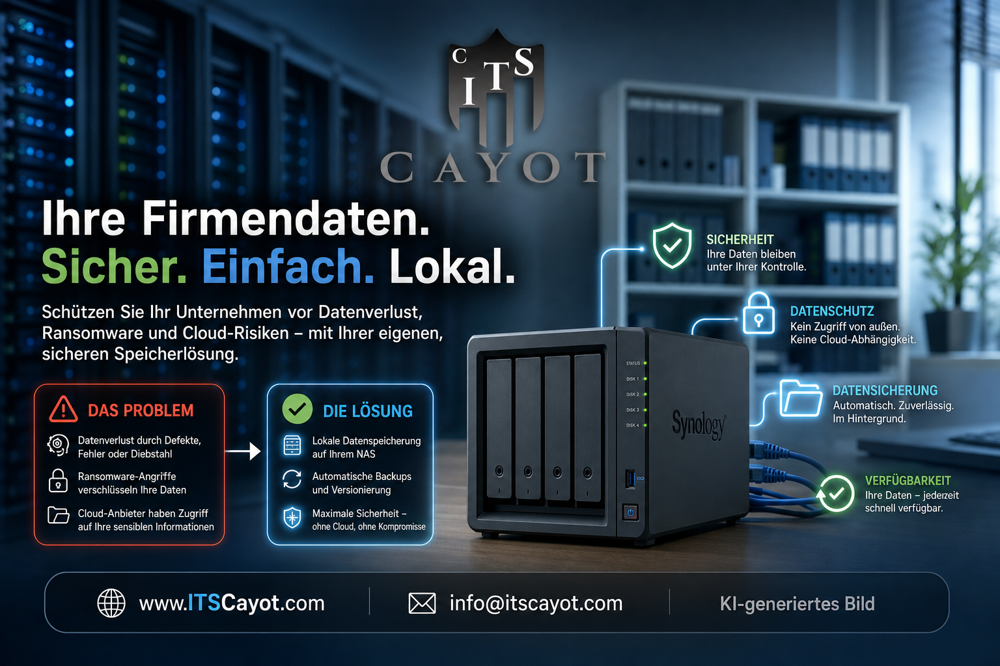

Was wir für Sie tun können
Vom schnellen Notdienst bis zum kompletten IT-Check – hier finden Sie unsere Leistungen für Privatkunden, Handwerksbetriebe und Firmen ohne eigene IT-Abteilung. Wenn Sie nicht sicher sind, was zu Ihnen passt: rufen Sie an, wir sortieren das gemeinsam.
Soforthilfe
Microsoft 365
Netzwerk & Daten

Alle Daten an einem Ort - sicher erreichbar Ihr Synology-NAS eingerichtet, umgezogen und laufend betreut - für zentrale Dateien, Zugriff von unterwegs und funktionierende Sicherung. NAS und Backup Service Ihr eigener Assistent - läuft bei Ihnen im Haus Ein eigener KI-Assistent, der lokal bei Ihnen läuft, Postfach und Termine sortiert und Ihre Daten im Haus behält. KI-Assistent für Ihren BetriebSicherheit
 So sehen Angreifer Ihre Domain von außen
Ein passiver Scan zeigt, welche Schwachstellen zu Ihrer Domain öffentlich sichtbar sind - inklusive verständlichem Bericht.
Sicherheitscheck von außen
Schutz vor gefälschten Mails in Ihrem Namen
Wir prüfen und richten SPF, DKIM und DMARC ein, damit niemand mehr Mails in Ihrem Namen verschicken kann.
E-Mail-Sicherheitscheck
Bereit für Ihre Cyberversicherung
Wir prüfen und dokumentieren, ob Ihre IT die Anforderungen Ihrer Cyberversicherung wirklich erfüllt.
Cyberversicherung vorbereiten
Drei Schutzschichten. Ein Ansprechpartner.
E-Mail-Sicherheit, Endgeräteschutz und Firewall aus einer Hand, betreut von einem Ansprechpartner.
Security-Paket für Unternehmen
So sehen Angreifer Ihre Domain von außen
Ein passiver Scan zeigt, welche Schwachstellen zu Ihrer Domain öffentlich sichtbar sind - inklusive verständlichem Bericht.
Sicherheitscheck von außen
Schutz vor gefälschten Mails in Ihrem Namen
Wir prüfen und richten SPF, DKIM und DMARC ein, damit niemand mehr Mails in Ihrem Namen verschicken kann.
E-Mail-Sicherheitscheck
Bereit für Ihre Cyberversicherung
Wir prüfen und dokumentieren, ob Ihre IT die Anforderungen Ihrer Cyberversicherung wirklich erfüllt.
Cyberversicherung vorbereiten
Drei Schutzschichten. Ein Ansprechpartner.
E-Mail-Sicherheit, Endgeräteschutz und Firewall aus einer Hand, betreut von einem Ansprechpartner.
Security-Paket für Unternehmen
Beratung & Dokumente
Endlich wissen, wo Ihre IT wirklich steht
Einmalige Bestandsaufnahme Ihrer IT mit den 20 wichtigsten Maßnahmen, sortiert nach Dringlichkeit und mit Kostenrahmen.
IT-Checkup für kleine Unternehmen
Feste IT-Ansprechperson ohne eigene Abteilung
Ein monatliches Stundenkontingent mit fester Ansprechperson - für alles von Drucker-Problemen bis zur IT-Strategie.
Ihre IT-Abteilung
Dokumente, die im Ernstfall wirklich helfen
Individuell erstellte IT-Dokumente - vom Administrationskonzept bis zur Onboarding-Checkliste, einsatzbereit für den Ernstfall.
IT-Dokumente
Nicht das Richtige dabei?
Dann sagen Sie uns einfach, worum es geht – wir finden den passenden Weg.